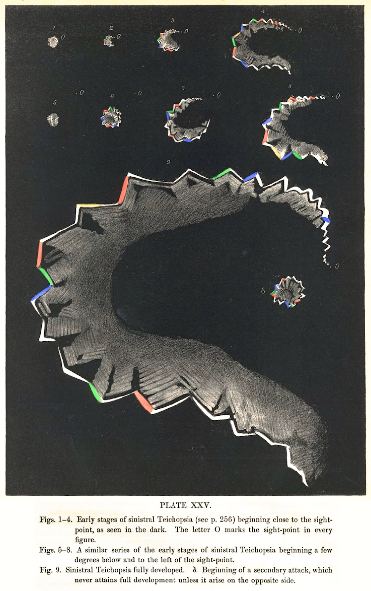

Q1. Percentual aproximado de enxaqueca com aura:
Achado + pegadinha
Aura: minoria que assusta como AVE
Escotomas e zigue-zague — e o medo de AVC. Como distinguir aura migranosa de evento vascular agudo?
Aura é minoria
Embora clássica, aura está em 20% a 25% dos casos. É sinal neurológico focal com nome próprio.
Tipos
Hemiplégica; parestésica (caso-porta: dormência em MS); visual (a mais comum) — escotomas cintilantes, linhas em zigue-zague, aspecto “psicodélico”, possível perda de campo. Relato clássico: na primeira vez, medo de AVE e impulso de ir ao hospital.
A prancha de Airy (1870) é a forma canônica do fortification spectrum: arco em muralha com bastões coloridos e centro escuro, expandindo a partir do ponto de fixação.
Sequência melhora → dor
Pode surgir junto ou depois da crise, mas o clássico é preceder: cerca de 20–30 minutos a 1 hora antes. Sequência característica: a aura melhora e, logo depois, a dor vem (relato: em menos de três minutos, latejante “tuf-tuf”).
Teoria vascular (questionável)
Hipótese debatida: alastramento libera mediadores; áreas vasodilatadas vs relativamente vasoconstritas; “foco” de sofrimento = aura. Não é consenso fechado.
Bordão
Minoria — mas assusta como AVE.

Airy H. Phil Trans R Soc. 1870. Plate XXV — Public domain · Via Wikimedia Commons · fonte
O arco zigue-zague que assusta como AVE
O zigue-zague em muralha e o escotoma central são a forma canônica da aura visual migranosa. Evolui em cerca de 20 min e melhora antes da dor.
Quiz
Q2. Sequência mais característica da aura migranosa clássica: